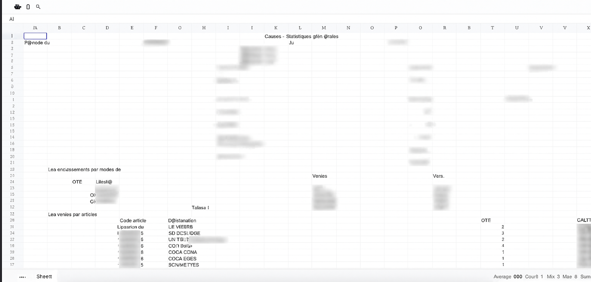
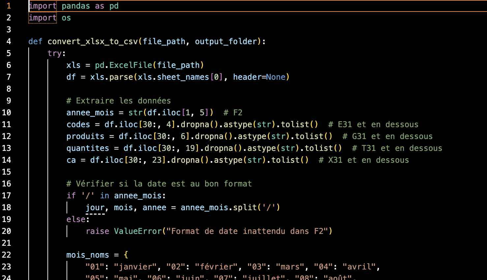
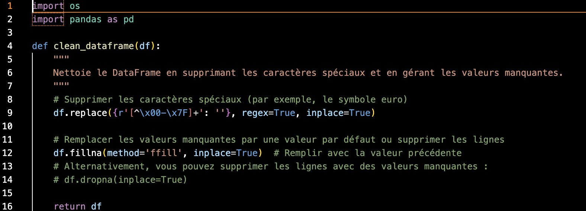
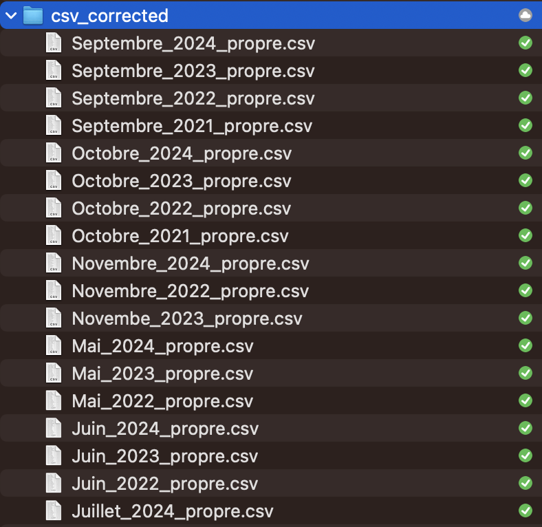

Avant / Après
AVANT : Données brutes
Exemple de fichier XLSX avec structure désuète et données non structurées

APRÈS : CSV propre
Même données transformées en CSV structuré avec colonnes clairement définies
Projet de nettoyage et standardisation de 4 années de données de ventes issues du salon de thé du musée Colette. Transformation de données inutilisables en datasets exploitables.
← Retour au portfolioDate: Juin 2025
Auteur: Richard Dufaur
Durée: 2 semaines de développement
Catégorie: Data Engineering • Python • Pandas
Lorsque j'ai commencé à travailler sur SalonTrack, j'ai commencé à regarder les différents fichiers de vente du salon de thé. Je me suis vite rendu compte qu'il y avait un problème. Les 4 ans de données de ventes (2021-2024) directement de la caisse sur clé USB, en format XLSX étaient complètement inutilisables en l'état.
Le système de caisse utilisait un format d'export désuet avec une structure de données super bizarre : les informations étaient éparpillées dans des cellules spécifiques (F2 pour la date, E31 pour les codes produits, G31 pour les noms, T31 pour les quantités, X31 pour le chiffre d'affaires), sans aucune logique de tableau structuré.
Avec 26 documents à traiter, impossible de faire ça à la main. Il fallait que je développe une solution automatisée pour nettoyer et standardiser l'ensemble de ces données. Let's code it.

Structure complètement désuète avec données éparpillées dans des cellules spécifiques
Script principal pour extraire les données des cellules spécifiques et les restructurer
Suppression des caractères spéciaux et gestion des valeurs manquantes
Standardisation des noms de mois et des formats de dates
J'ai développé trois scripts Python complémentaires pour automatiser le nettoyage. Le premier script (xlsx-csv.py) s'occupait de la conversion en extrayant les données des cellules spécifiques et en les restructurant dans un format CSV propre avec les colonnes : Code, Produit, Quantité, CA, Année, Mois.
Le deuxième script (correction.py) était conçu pour nettoyer les données en supprimant tous les caractères spéciaux problématiques (comme les symboles euro mal encodés) et en gérant les valeurs manquantes avec une stratégie de forward fill.
Enfin, le troisième script (aout.py) corrigeait un problème récurrent : le nom du mois d'août qui était parfois encodé comme "aot" ou "Aout" à cause de problèmes d'encodage.

Logique d'extraction des cellules spécifiques (F2, E31, G31, T31, X31) et restructuration en format CSV standard

Fonctions de nettoyage avec regex pour supprimer les caractères spéciaux et gestion des valeurs manquantes
Exemple de fichier XLSX avec structure désuète et données non structurées
Même données transformées en CSV structuré avec colonnes clairement définies
Les trois scripts ont permis de traiter automatiquement l'ensemble des 26 fichiers sans aucune intervention manuelle. Toutes les données sont maintenant dans un format standardisé et exploitable, prêtes pour l'analyse. Le taux de réussite a été de 100% - aucun fichier n'a été perdu ou corrompu pendant le processus.

Dossier avec tous les fichiers CSV nettoyés et prêts pour l'analyse
Ce projet de nettoyage était indispensable pour pouvoir faire des analyses sérieuses sur les données historiques du salon de thé. Sans cette étape de data engineering, impossible d'exploiter ces 4 années d'informations.
J'ai développé les scripts en parallèle de SalonTrack, les deux projets se complétant parfaitement : d'un côté la collecte de nouvelles données propres lié au profil des visiteurs du musée, de l'autre la récupération et le nettoyage de l'historique des ventes du salon de thé. C'était exactement le genre de défi technique que j'adore : transformer des données "impossibles" en datasets exploitables avec du code Python bien pensé.
Maintenant que j'ai des données propres et structurées, je peux passer à la phase d'analyse. Ça, ce sera le sujet d'un prochain article !